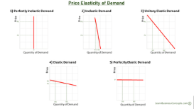
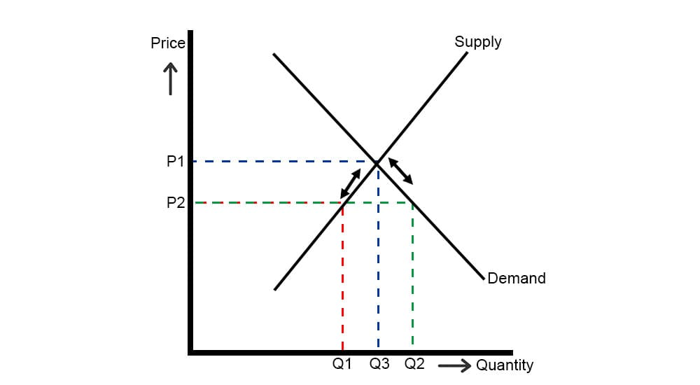
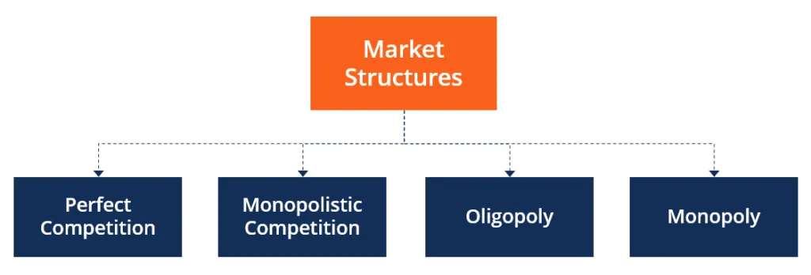

AP LESSONS FOR SECOND QUARTER :)
Lesson 1 – Demand


- Demand – Dami ng produkto o serbisyo na gusto at kayang bilhin ng mga mamimili sa takdang presyo at panahon.
- Batas ng Demand – Kapag tumataas ang presyo, bumababa ang demand; kapag bumababa ang presyo, tumataas ang demand.
- Ceteris Paribus – Ang presyo lang ang nagbabago habang ang ibang salik ay hindi.
- Substitution Effect – Kapag tumaas ang presyo, hahanap ang mamimili ng mas murang pamalit.
- Income Effect – Kapag bumaba ang presyo, mas malaki ang kakayahan ng kita na makabili.
- Mathematical Formula: Demand = Kagustuhan + Kakayahan
- Demand Function: Qd = a - bP
- Demand Schedule: Tsart ng bilang ng kalakal na hinihiling sa bawat presyo.
- Demand Curve: Grapikong representasyon ng negatibong relasyon ng presyo at dami ng demand.
- Mga Salik na Nakaaapekto sa Demand
- Kita – Tumataas ang demand kapag tumataas ang kita.
- Panlasa – Tumaas ang demand kapag naaayon sa gusto ng mamimili.
- Dami ng Mamimili – Bandwagon effect; sumasabay sa uso.
- Presyo ng Magkaugnay na Produkto – Komplementaryo o pamalit.
- Inaasahan sa Presyo – Kapag inaasahang tataas, bibili na ngayon.
- Okasyon – Tumataas ang demand sa panahon ng selebrasyon.
- Klima o Panahon – Apektado ng mga pagbabago sa panahon.
- Price Elasticity of Demand – Sukat ng pagtugon ng demand sa pagbabago ng presyo.
Lesson 2 – Supply


- Supply – Tumutukoy sa dami ng produkto o serbisyo na gustong ibenta ng mga prodyuser sa takdang presyo.
- Batas ng Supply – Kapag tumataas ang presyo, tumataas ang dami ng supply; kapag bumaba, bababa rin.
- Supply Schedule – Talahanayan ng dami ng produkto o serbisyo sa bawat presyo.
- Supply Function: Qs = -a + bP
- Mga Salik na Nakaaapekto sa Supply
- Pagbabago sa teknolohiya – Tinutulungan ang prodyuser na makabuo ng mas maraming supply.
- Pagbabago sa halaga ng salik produksiyon – Tumataas ang gastos, maaaring bumaba ang supply.
- Pagbabago sa bilang ng nagtitinda – Naapektuhan ng bandwagon effect.
- Pagbabago sa presyo ng kaugnay na produkto – Naaapektuhan ang parehong produkto.
- Ekspektasyon sa presyo – Kung tataas sa hinaharap, maghohoard ngayon.
- Okasyon, Panahon/Klima, Kalamidad, Dali ng pagkabulok ng produkto.
- Subsidy o tulong ng pamahalaan.
- Price Elasticity ng Supply – Sukat ng pagtugon ng quantity supplied sa pagbabago ng presyo.
Lesson 3 – Price Elasticity

- MGA URI NG ELASTISIDAD
- Elastic (>1) – Mas malaki ang pagtugon ng Qd kaysa sa %P.
- Inelastic (<1) – Mas maliit ang pagtugon ng Qd kaysa sa %P.
- Unitary (=1) – Pantay ang pagbabago ng Qd at %P.
- Perfectly Elastic (∞) – Infinite na pagbabago sa Qd sa maliit na pagbabago sa presyo.
- Perfectly Inelastic (0) – Walang epekto ang presyo sa Qd.
Lesson 4 – Market Equilibrium

- Equilibrium – Dami ng handa at kayang bilhin ng konsyumer = dami ng handa at kayang ipagbili ng prodyuser.
- Equilibrium Price – Pinagkasunduang presyo.
- Equilibrium Quantity – Pinagkasunduang dami ng produkto.
- Disequilibrium – Hindi magkatugma ang quantity demanded at quantity supplied.
- Shortage – Demand > Supply.
- Surplus – Supply > Demand.
Lesson 5 – Iba’t-ibang Estraktura ng Pamilihan

- Pamilihan at Estruktura
- Ganap na Kompetisyon – Maraming konsyumer at prodyuser, price takers, walang kontrol sa presyo.
- Di-Ganap na Kompetisyon – Indibidwal na may kontrol sa presyo.
- Monopolyo – Iisang prodyuser, walang kapalit, price maker.
- Oligopoly – Ilang prodyuser, may kontrol sa presyo, advertising intensive.
- Monopolistic Competition – Katamtamang dami ng prodyuser, may advertising, may kaunting kontrol sa presyo.
- Monopsony – Iisang konsyumer, maraming prodyuser, may impluwensya sa presyo.
Lesson 6 – Bahaging Ginagampanan ng Pamahalaan sa Regulasyon ng mga Gawaing Pangkabuhayan
- Price Control – Pamahalaan nagtatalaga ng pinakamababa at pinakamataas na presyo.
- Republic Act 7581 – Layunin ng Price Control Act.
- National Price Coordination Council – Binabantayan ang presyo ng mga produkto.
- Price Ceiling – Pinakamataas na presyong itinalaga, mas mababa sa equilibrium price.
- Price Support – Proteksyon sa mga prodyuser para sa gastos ng produksyon.
- Floor Price – Pinakamababang presyong itinalaga, mas mataas sa equilibrium price.